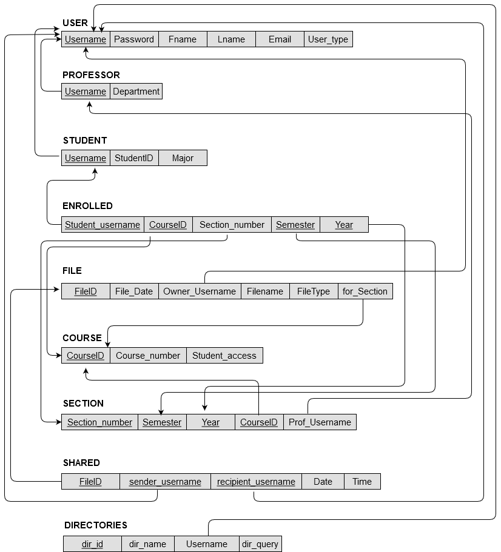
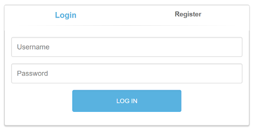
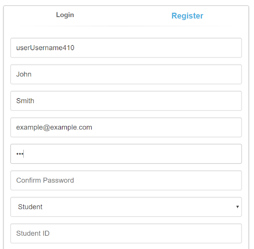
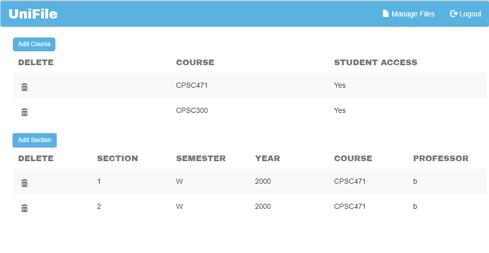
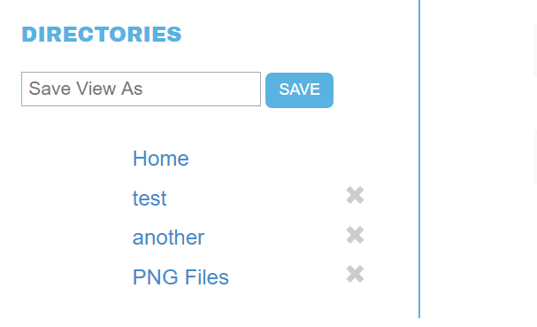
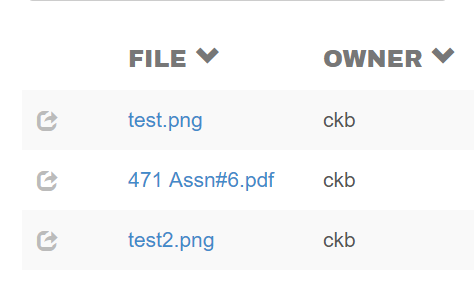

Dropbox for Students and Teachers
Objective
This project was completed for a Database class. Our plan was to create a file storage and sharing application that could keep track of ownership, permissions, relevant classes, and other details.
My Role
Me and two other group members created a database schema together, and then I designed and created much of the core application. My group members created the login/register screens and functionality, as well as the views for professors to add new courses and sections.
Technologies
- HTML / CSS
- JavaScript
- PHP
- MySQL
Process
Since the priority for this project was database management, it started with the design of a schema. This took some trial and error to get a usable relational model.
All that was left after that was to slowly implement each feature of the application. We needed the ability for the user to login / register, upload / share / delete files, and keep a modicum of security between users. *I apologize as my team member deleted the project from github, so I only have screenshots from the project report.
 Once the user is logged in, they can start to upload files.

If the user is a teacher they can also add courses for students to relate their files to.
We decided it would also be a helpful feature if the user could organize their files into collections, so I added 'directories' that could contain discrete file sets.
Lastly we added functionality for sorting, downloading, sharing, and deleting files.
The user can click the icon on the left, and type a username to share the file. Click the blue filename to download, click the down arrow next to the field name to sort by that criteria, and there are x's next to every file that enable the user to delete it.
Remarks
Other than some aging font and icon choices, I'm quite proud of this project. It required a diverse set of skills and a depth of learning as well. It taught me a lot about database management and was my first real experience with user flows. I really enjoyed thinking about all the branching paths a user needed to take to successfully use the application.